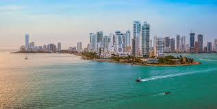

Paseo por Medellin
Medellín es la capital de la provincia montañosa de Antioquia en Colombia. Es apodada la "Ciudad de la eterna primavera" por su clima templado y alberga la famosa Feria de las Flores anual. El moderno Metrocable conecta la ciudad con los barrios circundantes y tiene vistas del Valle de Aburrá que se encuentra debajo. Las esculturas de Fernando Botero decoran la Plaza Botero en el centro de la ciudad, mientras que el Museo de Antioquia exhibe más obras del artista colombiano
Paseo por Bogota
Bogotá es la extensa capital en altura de Colombia. La Candelaria, su centro con adoquines, cuenta con sitios coloniales como el Teatro Colón neoclásico y la Iglesia de San Francisco del siglo XVII. También alberga museos populares, incluido el Museo Botero, que exhibe arte de Fernando Botero, y el Museo del Oro, con piezas de oro precolombinas

Paseo por Caratagena
Cartagena es una ciudad portuaria en la costa caribeña de Colombia. Junto al mar, se encuentra la Ciudad Vieja amurallada, que se fundó en el siglo XVI, con plazas, calles de adoquines y edificios coloniales coloridos. Con un clima tropical, la ciudad también es un destino popular por sus playas. Se puede llegar en bote a la Isla de Barú, con playas de arena blanca y palmeras, y a las Islas del Rosario, famosas por sus arrecifes de coral